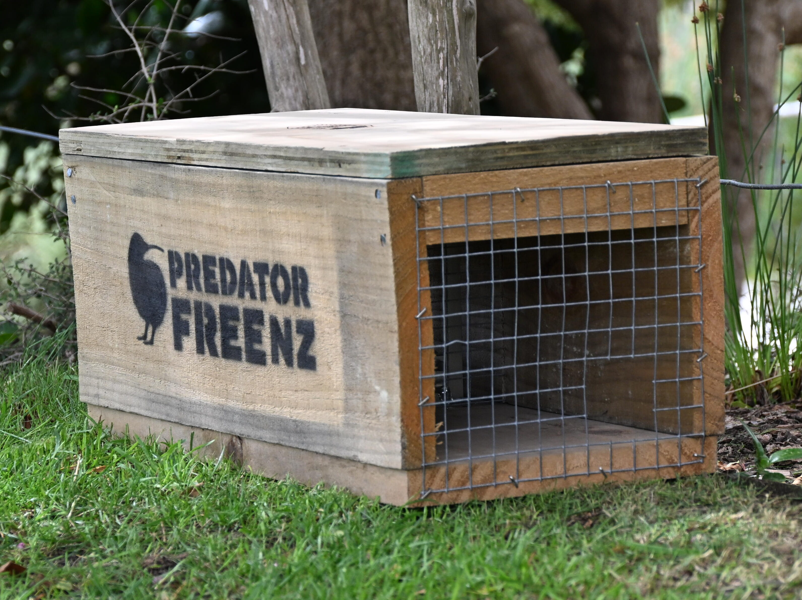
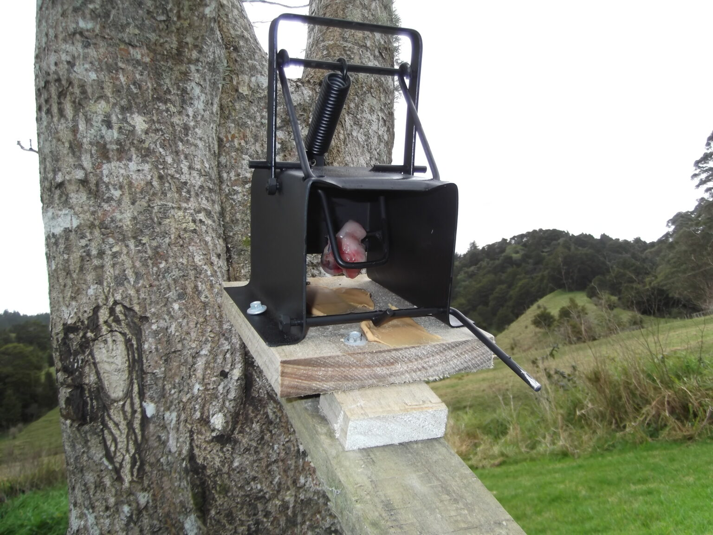

How to use these traps
DOC 250 TRAP: Designed as a heavy-duty kill trap for ferrets, large stoats and rats. You can bait it with high protein meats like rabbit, hare, eggs or fish. Always use the instructions for how to set these traps since they have heavy springs
SA2 Trap: An incredibly powerful, tree mounted or ground based trap which targets possums and feral cats. For getting the best results, mount the trap where the animals can have a proper vision or a wooden ramp leading up to the entrance of the trap. Use fresh fruit or aromatic scents to lure the pests in
Best Practices
- Always wear protective gloves when handling catching and putting new bait into the traps
- Place your traps along paths like fench lines, ridges or waterways.
- Check and clear traps at least once a month and replacing old bait completely.
Traps


More info about pest control using the image as example
How to use this trap
Sa2 trap and doc 250 trap
additional summary